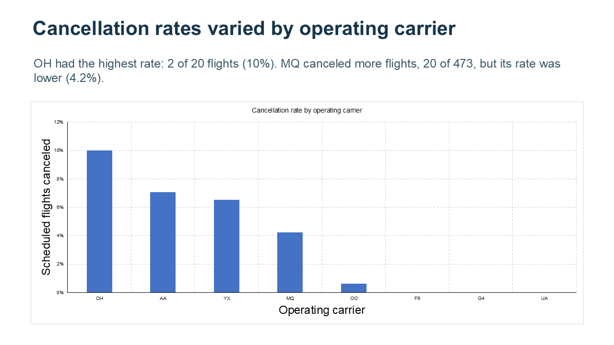
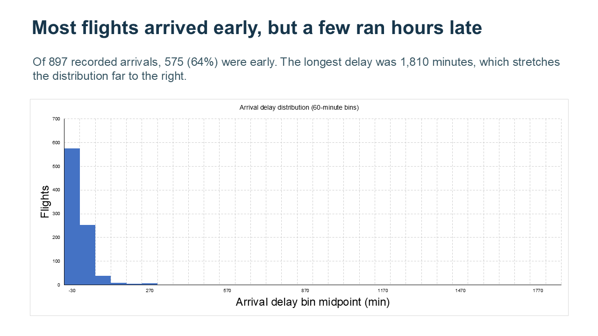

Team
This project was completed as a team for INEG 21003 Data Visualization at the University of Arkansas. Every member contributed to the analysis and the slides.
- Derek Camacho
- Easton Contorno
- Josiah Cox
- Reese Martin
- Isaac Shilling

The Data Set
We got our information from the U.S. Department of Transportation’s Bureau of Transportation Statistics. They have a report on how well airlines are doing with their schedules. We looked at all the flights that were supposed to leave from Northwest Arkansas National Airport in January 2025 - there were 933 of them. Each flight is listed separately, with details like the date it flew, which airline it was, how late it left, how late it arrived, if it was canceled, how far it went, and how long it was in the air.
We took the data and put it into an Excel spreadsheet, making sure to give the columns names that made sense. Then we cleaned up the data on a sheet called Flight Data. We didn’t include canceled flights in our calculations for delay or air time, since they didn’t have any values for those things - instead, we just left those spaces blank. All the summary tables and charts were created on a separate sheet called Plots. Each of the four questions we were trying to answer used different parts of the data.
Question 1: What happened to flight delays at XNA during January 2025 - did they get better or worse?
Why it’s interesting: We’re curious about XNA because it’s our local airport, and most of us use it to fly back home during breaks. When January rolls around, Northwest Arkansas gets hit with winter weather. So, we wondered if flight delays happen gradually throughout the month or if they all pile up on certain days.
How we used Excel: We used Excel to look at flight delays. We took the flight date and how late the planes left, and put them into groups by day. This was done on the Plots sheet, which looked at 898 flights that were late leaving. If a flight left early, it showed up as a negative number. When we averaged out how late the flights were each day in January, one day really stood out - January 10. On that day, 14 flights were late by an average of 185 minutes.
How we developed the visual: To create the visual, we focused on showing how things changed over time. We used a line chart that plots time on the horizontal axis and the average delay in minutes on the vertical axis. We kept things simple with one color for the line and made sure to label the axes with their units. We also wanted to make it clear when the delays were below average, so we kept the zero line visible. The main point of the chart is highlighted in the headline, which talks about the peak on January 10. The rest of the text adds more detail, explaining that the daily averages didn’t just keep going up, but instead went up and down.

Question 2: What airlines cut the most flights to XNA?
Why it’s interesting: What makes this interesting is that the airline you choose can make a big difference when you’re booking a flight home. If your flight gets canceled, it’s a lot more frustrating than just being delayed. So, we decided to look into whether some airlines at XNA cancel flights more often than others. We also wanted to find out if the airline with the most canceled flights is really the most unreliable one.
How we used Excel: We used Excel to crunch the numbers. First, we looked at the operating carrier and canceled columns in the Plots sheet. This helped us count how many flights were scheduled to take off and how many were actually canceled for each airline. Then, we calculated the cancellation rate by dividing the number of canceled flights by the total number of scheduled departures. We had a total of 933 scheduled flights across all airlines, with some having a lot more flights than others - like MQ with 473 and OO with 162, while others had much fewer, such as F9 with just 4 and G4 with 52. What really mattered was comparing the cancellation rates, not just the total number of cancellations. For example, MQ had the most cancellations at 20, but its cancellation rate was only 4.2%. On the other hand, OH canceled just 2 flights, but its cancellation rate was the highest at 10%.
How we developed the visual: We created the visual by using a bar chart to compare values across different categories. To make it clear, we arranged the carriers in order from highest to lowest cancellation rate. We also made sure to format the vertical axis to show percentages and labeled both axes so it’s easy to understand. The main point is stated in the headline, and the supporting text provides more details about the two most important bars. Since we’re only looking at one month of data, we didn’t want to say that the carrier is the reason for the difference - we just wanted to show what the numbers say.

Question 3: How are flights leaving XNA delayed on arrival?
Why it’s interesting: It’s interesting because averages can be misleading. What we really want to know is what a normal flight from XNA is like. Do most flights arrive on time? And how often are they really late, which is a big deal if you have connections or rides waiting for you at the other end.
How we used Excel: We used Excel to analyze the arrival delays of flights. First, we took the arrival delay column and grouped the delays into 60-minute chunks, counting how many flights fell into each chunk. We didn’t include any missing delays, but we did keep the empty chunks and the longest delay to show the full range. Out of 897 flights, 575 arrived early - that’s 64%. The longest delay was a whopping 1,810 minutes.
How we developed the visual: To create the visual, we needed to show how one set of numbers was spread out, so we used a histogram. We got rid of the spaces between the bars, making them touch each other, and labeled each bar with its middle point - for instance, -30 means the time is between -60 and just before 0 minutes. We also labeled the vertical axis to show how many flights there were. The main thing that stands out is the long tail on the right side, which is why the headline says that while most flights arrived early, some were delayed by hours.

Question 4: What is the relationship between the distance a flight travels and the time it is in the air?
Why it’s interesting: What’s interesting is that XNA has direct flights to nearby and distant cities. You’d think that longer flights would take more time, but we were curious about how much of a difference it really makes and how much variation there is among flights that cover the same distance.
How we used Excel: We used Excel to look at the connection between distance and air time for 897 flights. We matched up the distance in miles with the air time in minutes for each flight. Then, we calculated the correlation between these two things and found a strong link - the number was 0.94, which is a really strong positive relationship. One thing to note: air time doesn’t include the time spent taxiing.
How we developed the visual: We created the visual by using a scatter plot with two key pieces of information: distance and air time. The distance is shown on the horizontal axis and the air time on the vertical axis, with both labeled so you can easily see the units. Each point on the plot represents a single flight, and when flights follow the same route, they form vertical groups. This grouping shows just how much air time can vary when the distance is the same. To back up the claim made in the headline, we’ve included the correlation coefficient in the supporting text, giving you a clear number to work with.